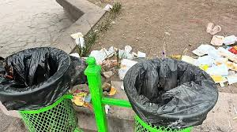

pagina de reforestacion
pagina de reforestacion

 pagina de reforestacion
pagina de reforestacion
En este apartado se presentaran todos los trabajos relacionados con la campaña de reforestacion que se fueron trabajando dentro del plantel 40 Ixtlahuaca en las diferentes materias
El pasado 22 de mayo del año en curso dengtro de la campaña de reforestacion en la materia de Ecologia se nos pidio llevar un arbol en el cual por equipos se nos pidio llevar un arbol para que lo pudieramos plantar dentro del plantel, la razon fue para que a los alumnos se les fomente que es importante plantar mas arboles en espacios de convivencia ya que tiene muchos beneficios el poder plantar arboles en cualquier area apta para dicha plantacion
El 21 de mayo del año en curso dentro de la materia de actividad artistica cultural IV trabajamos dentro de su clase el que tan importante es el arbol para nosotros, la cual la maestra nos explicaba que hay beneficios el poder plantar un arbol
El 14 de mayo del año en curso dentro de la escuela se hizo una campaña en general en la cual consistio en ir a recoger basura en los alrededores del plantel, ya que esto afecta en la area de reforestacion por la contaminacion que hay pues en nuestra comunida de San Cristobal De Los Baños
